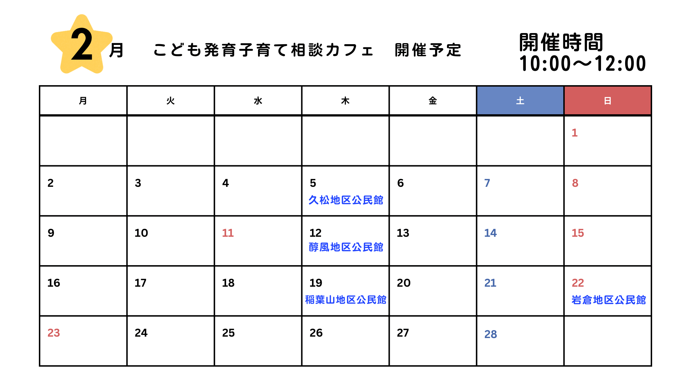
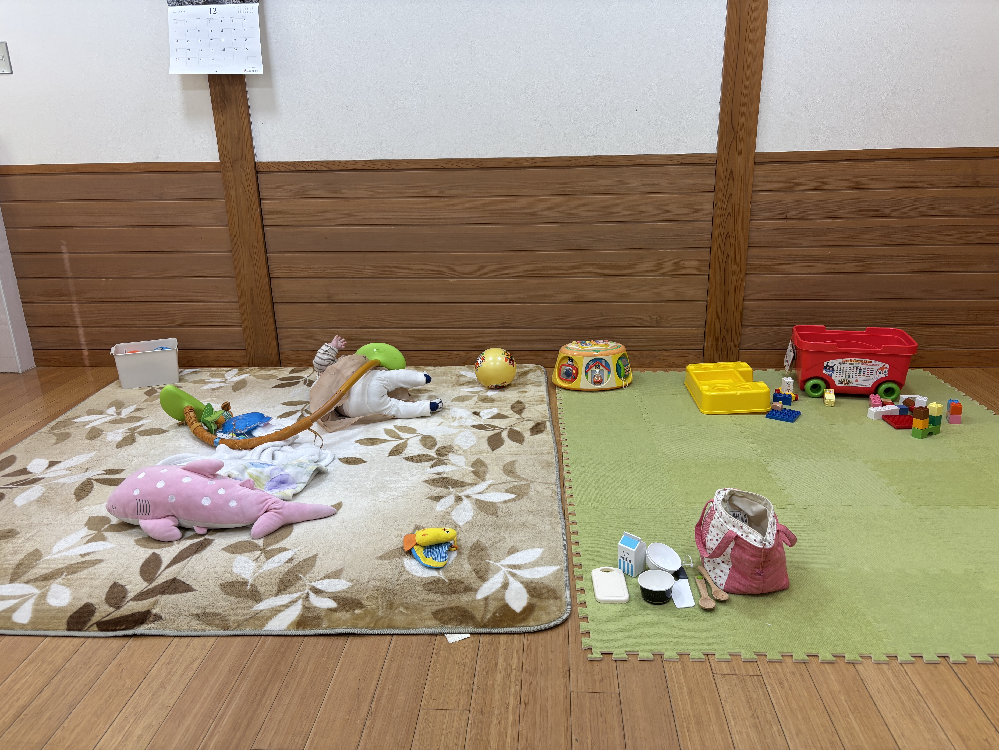
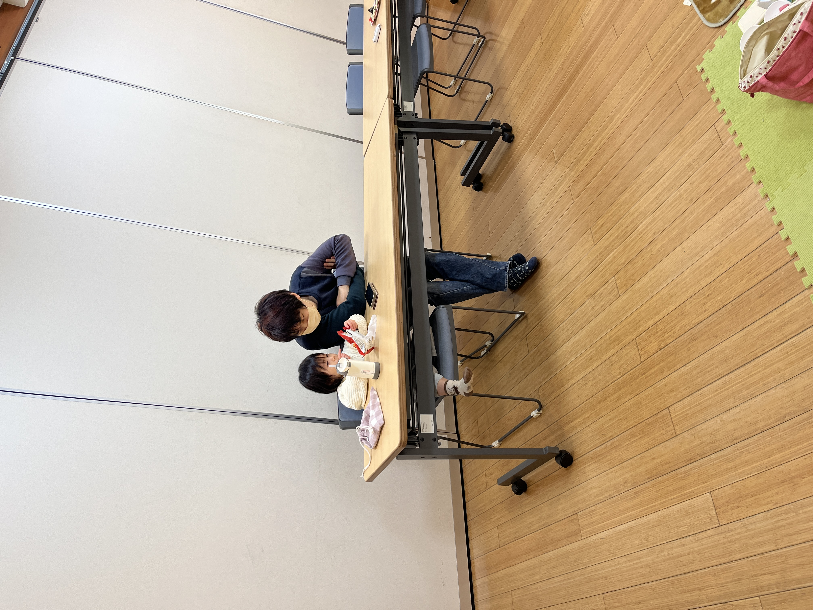
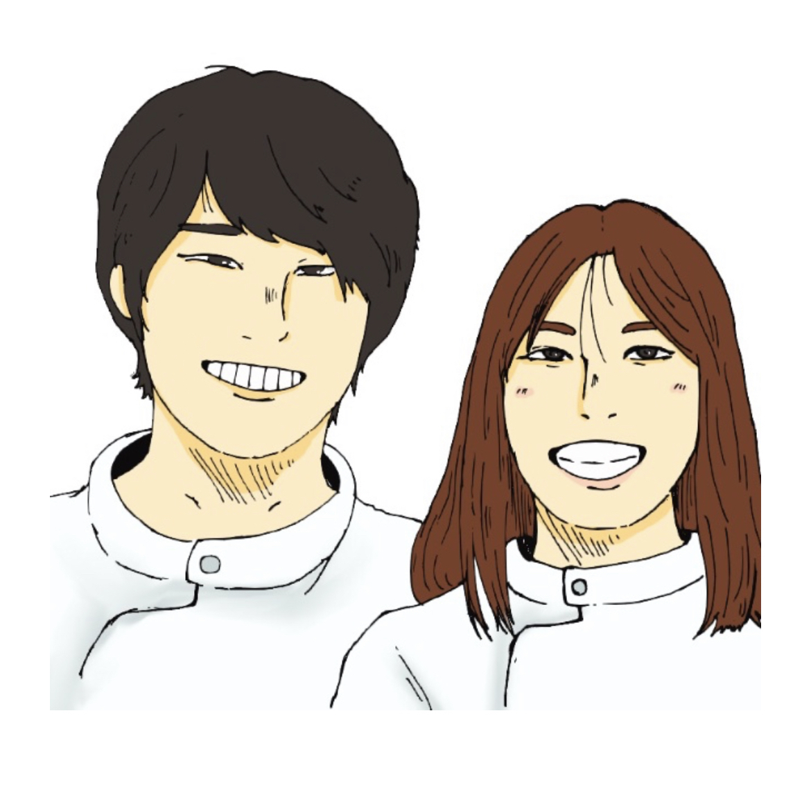

こども発育・子育て相談カフェとは？
鳥取市で子育て中の保護者の方を対象に、
子どもの発育や日々の子育ての悩みを
気軽に相談できる公民館イベントです。
「ちょっと気になる」「誰かに聞いてほしい」
「どう関わればいいのかわからない」
そんな思いを、そのまま持って来てもらえる場所を目指しています。
こんなお悩みはありませんか？
- 子どもの発育がゆっくりな気がして不安
- 育て方がこれで合っているのか迷う
- 相談できる場所がなかなかない
- 同じ地域で子育てしている人と話したい
- 病院に行くほどではないけれど、気になることがある
- 専門家に相談してみたい
当日の内容
- 子どもの発育・子育てに関する個別相談
- 保護者同士の交流
- お茶を飲みながら、ゆったり話せるカフェ形式
実際の相談内容
- 今の年齢に合った遊びを教えてほしい
- 食べムラが気になる
- ネットで調べるが本当に合っているかどうかがわからない
- 5歳になるが読めるひらがなが少ない気がする
開催スケジュール
開催実績：12月28日（日）岩倉地区公民館で開催しました。
大雪のため中止：1月25日（日）10:00〜12:00（岩倉地区公民館）
開催実績：2月5日（木）10:00〜12:00（久松地区公民館）
開催実績：2月12日（木）10:00〜12:00（醇風地区公民館）
次回開催日：2月19日（木）10:00〜12:00（稲葉山地区公民館）
開催日：2月22日（日）10:00〜12:00（岩倉地区公民館）
開催日：3月5日（木）10:00〜12:00（浜坂地区公民館）
開催日：3月12日（木）10:00〜12:00（谷地区公民館）
開催日：3月22日（日）10:00〜12:00（岩倉地区公民館）
開催日：3月26日（木）10:00〜12:00（醇風地区公民館）
対象：0歳（未就学児含む）〜小学生の子を持つ保護者
参加費：300円（ドリンク付き）
※ 今後、美保・城北・湖山地区でも開催予定

開催イメージ


岩倉地区公民館開催時の写真
.jpeg)
久松地区公民館開催時の写真
よくある質問
Q. 予約は必要ですか？
A. 事前申込み・当日参加どちらも可能です。
Q. 子ども連れでも参加できますか？
A. はい。お子さまと一緒に参加できます。
Q. 勧誘などはありますか？
A. 勧誘は一切ありませんので安心してご参加ください。
相談スタッフ紹介

小児専門作業療法士 津澤 温美（つざわ あつみ）
小児分野を中心に、作業療法士として8年間、
発育や生活面に不安を抱えるお子さんと、そのご家族に関わってきました。
現在は、3歳と0歳の子どもを育てる子育て3年目の母です。
専門職として関わってきた立場でありながら、
実際に親になってみて「これでいいのかな」と悩むことも多くありました。
だからこそ、
「こんなこと相談してもいいのかな」
「誰に聞いたらいいかわからない」
そんな気持ちを、安心して話せる場所を作りたいと思い、この相談カフェを企画・開催しています。
小児専門作業療法士 津澤 智弥（つざわ ともや）
作業療法士として7年間、小児分野に携わり、
発達特性のあるお子さんや、日常生活に困りごとを抱えるご家庭と関わってきました。
「できる・できない」だけで判断するのではなく、
その子なりのペースや得意なことを大切にしながら、
保護者の方と一緒に考えていく関わりを心がけています。
相談カフェでは、専門的な視点だけでなく、
今の生活の中でできることを一緒に整理する時間を大切にしています。